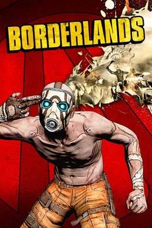
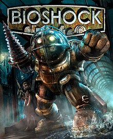
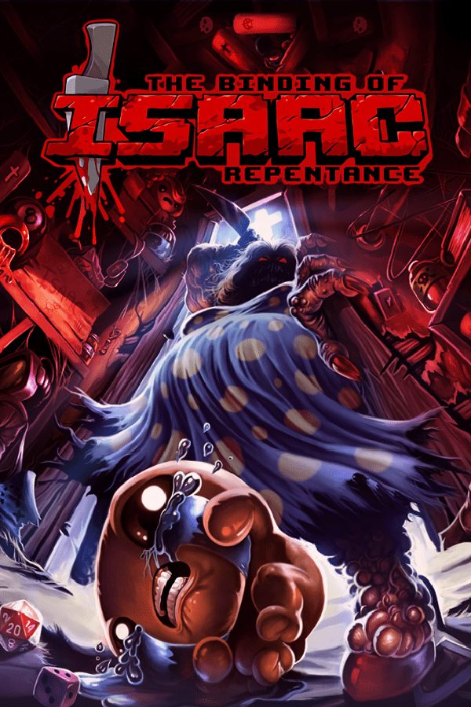

BORDERLANDS
Borderlands is a 2009 action role-playing first-person shooter video game developed by Gearbox Software and published by 2K. It is the first game in the Borderlands series.
ONE SLICE:
Borderlands holds a special place in my heart as it was the game that pulled me into the looter-shooter genre. The plot expands to 3 games and having played them all, I can say that the storyline and the introduction of characters can really make you immeresed to the game's universe. Gameplay mechanics are perfection with smooth movements and satisfying kills. At times, the game gets pretty tiring with it's grinding perspective and open-world maps. But still it can be remedied by going on side quests, which at times are goofy and also brings you closer to other characters of the game.
RATING: 8.5/10

BIOSHOCK
BioShock is a 2007 first-person shooter game developed by 2K Boston (later Irrational Games) and 2K Australia, and published by 2K. The first game in the BioShock series, it was released for Microsoft Windows and Xbox 360 platforms in August 2007; a PlayStation 3 port by Irrational, 2K Marin, 2K Australia and Digital Extremes was released in October 2008.
ONE SLICE:
BioShock is one of the classics of gameplay, with it's sci-fi atmosphere and horror elements which will keep you on your toes. The game progression gives you the best immersive experience of it's time, with weapon upgrades, biological superpowers, and economy will make you think strategically when fighting foes. The story however, while quite confusing due to the fact that sometimes you need to pick-up voice tapes scattered to further understand the lore. Still, the game comes with two endings which for me is both confusing when playing for the first time.
RATING: 8.0/10

THE BINDING OF ISAAC: REPENTANCE
The Binding of Isaac is a roguelike video game designed by independent developers Edmund McMillen and Florian Himsl. It was released in 2011 for Microsoft Windows, then ported to OS X, and Linux. The game's title and plot are inspired by the Biblical story of the Binding of Isaac.
ONE SLICE:
Want to get a headache while still having "fun"? Then this game is right for you, another one of the most important games in my time of gaming. Introduced me to the frustratingly beautiful genre of rougelite shooters, with the lore inspired from the Bible. The gameplay controls are derived from the Nintendo classic The Legend of Zelda, you are only entrusted with the WASD keys, arrow keys, and other buttons on your keyboard only. This game will test your skills and patience, with the items only giving you vague tooltips and dishing you with punishing gameplay. I don't know why I like this game, but I don't regret liking it.
RATING: 9.0/10